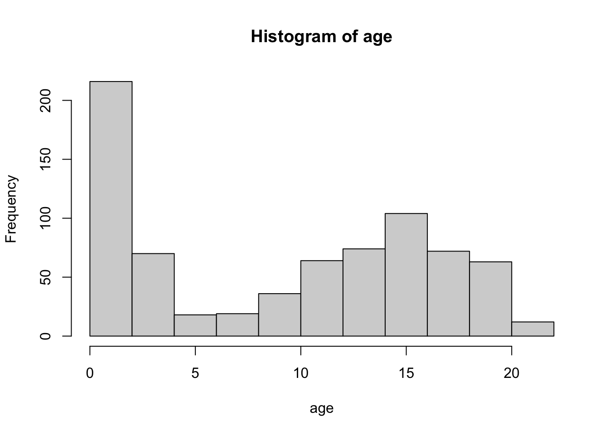
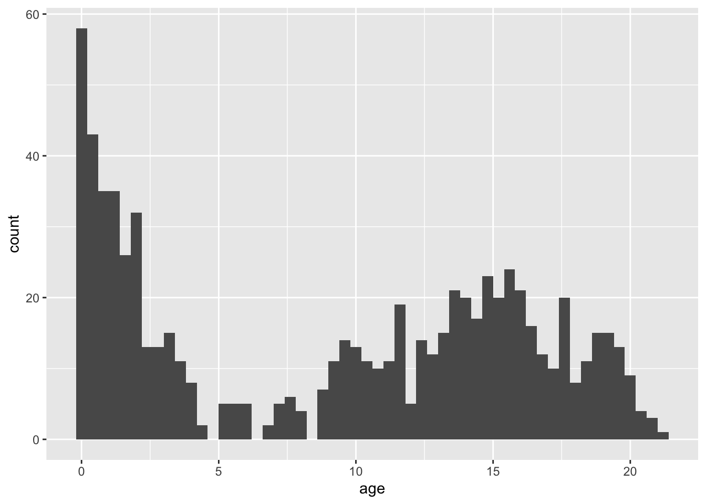
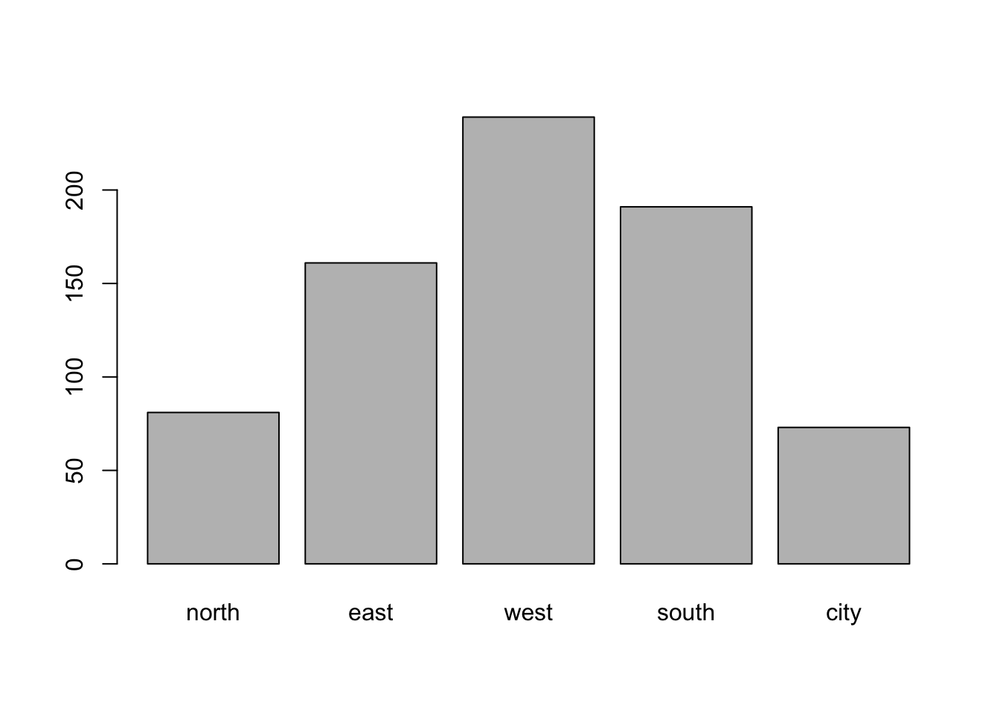

![]()
Code
library(dplyr)
library(magrittr)
library(mice)
library(ggplot2)A picture says more than a thousand words
Aan het bovenstaande adage zullen we vandaag veel aandacht besteden. We duiken in de rationale achter de gramatica van afbeeldingen en zullen dit ons eigen gaan maken. We behandelen verschillende visualizatie benaderingen en zullen zien dat less is more een goed uitgangspunt is. De collegeslides voor deze week kunt u hier vinden
The following packages are required for this practical:
library(dplyr)
library(magrittr)
library(mice)
library(ggplot2)and if you’d like the same results as I have obtained, you can fix the random seed
set.seed(123)plot() is the core plotting function in R. Find out more about plot(): Try both the help in the help-pane and ?plot in the console. Look at the examples by running example(plot).The help tells you all about a functions arguments (the input you can specify), as well as the element the function returns to the Global Environment. There are strict rules for publishing packages in R. For your packages to appear on the Comprehensive R Archive Network (CRAN), a rigorous series of checks have to be passed. As a result, all user-level components (functions, datasets, elements) that are published, have an acompanying documentation that elaborates how the function should be used, what can be expected, or what type of information a data set contains. Help files often contain example code that can be run to demonstrate the workings.
?plotHelp on topic 'plot' was found in the following packages:
Package Library
graphics /Library/Frameworks/R.framework/Versions/4.5-arm64/Resources/library
base /Library/Frameworks/R.framework/Resources/library
Using the first match ...example(plot)
plot> Speed <- cars$speed
plot> Distance <- cars$dist
plot> plot(Speed, Distance, panel.first = grid(8, 8),
plot+ pch = 0, cex = 1.2, col = "blue")
plot> plot(Speed, Distance,
plot+ panel.first = lines(stats::lowess(Speed, Distance), lty = "dashed"),
plot+ pch = 0, cex = 1.2, col = "blue")
plot> ## Show the different plot types
plot> x <- 0:12
plot> y <- sin(pi/5 * x)
plot> op <- par(mfrow = c(3,3), mar = .1+ c(2,2,3,1))
plot> for (tp in c("p","l","b", "c","o","h", "s","S","n")) {
plot+ plot(y ~ x, type = tp, main = paste0("plot(*, type = \"", tp, "\")"))
plot+ if(tp == "S") {
plot+ lines(x, y, type = "s", col = "red", lty = 2)
plot+ mtext("lines(*, type = \"s\", ...)", col = "red", cex = 0.8)
plot+ }
plot+ }
plot> par(op)
plot> ##--- Log-Log Plot with custom axes
plot> lx <- seq(1, 5, length.out = 41)
plot> yl <- expression(e^{-frac(1,2) * {log[10](x)}^2})
plot> y <- exp(-.5*lx^2)
plot> op <- par(mfrow = c(2,1), mar = par("mar")-c(1,0,2,0), mgp = c(2, .7, 0))
plot> plot(10^lx, y, log = "xy", type = "l", col = "purple",
plot+ main = "Log-Log plot", ylab = yl, xlab = "x")
plot> plot(10^lx, y, log = "xy", type = "o", pch = ".", col = "forestgreen",
plot+ main = "Log-Log plot with custom axes", ylab = yl, xlab = "x",
plot+ axes = FALSE, frame.plot = TRUE)
plot> my.at <- 10^(1:5)
plot> axis(1, at = my.at, labels = formatC(my.at, format = "fg"))
plot> e.y <- -5:-1 ; at.y <- 10^e.y
plot> axis(2, at = at.y, col.axis = "red", las = 1,
plot+ labels = as.expression(lapply(e.y, function(E) bquote(10^.(E)))))
plot> par(op)There are many more functions that can plot specific types of plots. For example, function hist() plots histograms, but falls back on the basic plot() function. Package ggplot2 is an excellent package to use for more complex plots. Pretty much any type of plot can be made in R. All ggplot2 documentation can be found at ggplot2.tidyverse.org
age and bmi in the mice::boys data setWith the standard plotting device in R:
mice::boys %$% plot(bmi ~ age)
or, with ggplot2:
p <- ggplot(mice::boys, aes(age, bmi))
p + geom_point()Warning: Removed 21 rows containing missing values or values outside the scale range
(`geom_point()`).
Package ggplot2 offers far greater flexibility in data visualization than the standard plotting devices in R. However, it has its own language, which allows you to easily expand graphs with additional commands. To make these expansions or layers clearly visible, it is advisable to use the plotting language conventions. For example,
mice::boys %>%
ggplot(aes(age, bmi)) +
geom_point()would yield the same plot as
ggplot(mice::boys, aes(age, bmi)) + geom_point()but the latter style may be less informative, especially if more customization takes place and if you share your code with others.
bmi < 18.5 use color = "light blue"bmi > 18.5 & bmi < 25 use color = "light green"bmi > 25 & bmi < 30 use color = "orange"bmi > 30 use color = "red"Hint: it may help to expand the data set with a new variable.
It may be easier to create a new variable that creates the specified categories. We can use the cut() function to do this quickly
boys2 <-
boys %>%
mutate(class = cut(x = bmi, breaks = c(0, 18.5, 25, 30, Inf),
labels = c("underweight",
"healthy",
"overweight",
"obese")))by specifying the boundaries of the intervals. In this case we obtain 4 intervals: 0-18.5, 18.5-25, 25-30 and 30-Inf. We used the %>% pipe to work with bmi directly. Alternatively, we could have done this without a pipe:
boys3 <- boys
boys3$class <- cut(boys$bmi, c(0, 18.5, 25, 30, Inf),
labels = c("underweight",
"healthy",
"overweight",
"obese"))to obtain the same result.
With the standard plotting device in R we can now specify:
plot(bmi ~ age, subset = class == "underweight", col = "lightblue", data = boys2,
ylim = c(10, 35), xlim = c(0, 25))
points(bmi ~ age, subset = class == "healthy", col = "lightgreen", data = boys2)
points(bmi ~ age, subset = class == "overweight", col = "orange", data = boys2)
points(bmi ~ age, subset = class == "obese", col = "red", data = boys2)and with ggplot2 we can call
boys2 %>%
ggplot() +
geom_point(aes(age, bmi, col = class))Warning: Removed 21 rows containing missing values or values outside the scale range
(`geom_point()`).
Although the different classifications have different colours, the colours are not conform the specifications of this exercise. We can manually override this:
boys2 %>%
ggplot() +
geom_point(aes(age, bmi, col = class)) +
scale_color_manual(values = c("lightblue", "lightgreen", "orange", "red"))Warning: Removed 21 rows containing missing values or values outside the scale range
(`geom_point()`).
Because there are missing values, ggplot2 displays a warning message. If we would like to not consider the missing values when plotting, we can simply exclude the NAs by using a filter():
boys2 %>%
filter(!is.na(class)) %>%
ggplot() +
geom_point(aes(age, bmi, col = class)) +
scale_color_manual(values = c("lightblue", "lightgreen", "orange", "red"))
Specifying a filter on the feature class is sufficient: age has no missings and the missings in class directly correspond to missing values on bmi. Filtering on bmi would therefore yield an identical plot.
age in the boys data setWith the standard plotting device in R:
boys %$%
hist(age, breaks = 50)
The breaks = 50 overrides the default breaks between the bars. By default the plot would be
boys %$%
hist(age)Using a pipe is a nice approach for this plot because it inherits the names of the objects we aim to plot. Without the pipe we might need to adjust the main title for the histogram:
hist(boys$age, breaks = 50)
With ggplot2:
boys %>%
ggplot() +
geom_histogram(aes(age), binwidth = .4)Please note that the plots from geom_histogram() and hist use different calculations for the bars (bins) and hence may look slightly different.
reg in the boys data set With a standard plotting device in R:boys %$%
table(reg) %>%
barplot()With ggplot2:
boys %>%
ggplot() +
geom_bar(aes(reg))Note that geom_bar by default plots the NA’s, while barplot() omits the NA’s without warning. If we would not like to plot the NAs, then a simple filter() (see exercise 2) on the boys data is efficient.
hgt with different boxes for reg in the boys data set With a standard plotting device in R:boys %$%
boxplot(hgt ~ reg)With ggplot2:
boys %>%
ggplot(aes(reg, hgt)) +
geom_boxplot()Warning: Removed 20 rows containing non-finite outside the scale range
(`stat_boxplot()`).
# This does not work!
#boys %$%
# ggplot(aes(reg, hgt)) +
# geom_boxplot()age with different curves for boys from the city and boys from rural areas (!city). With a standard plotting device in R:d1 <- boys %>%
subset(reg == "city") %$%
density(age)
d2 <- boys %>%
subset(reg != "city") %$%
density(age)
plot(d1, col = "red", ylim = c(0, .08))
lines(d2, col = "blue") 
The above plot can also be generated without pipes, but results in an ugly main title. You may edit the title via the main argument in the plot() function.
plot(density(boys$age[!is.na(boys$reg) & boys$reg == "city"]),
col = "red",
ylim = c(0, .08))
lines(density(boys$age[!is.na(boys$reg) & boys$reg != "city"]),
col = "blue")
With ggplot2 everything looks much nicer:
boys %>%
mutate(area = ifelse(reg == "city", "city", "rural")) %>%
filter(!is.na(area)) %>%
ggplot(aes(age, fill = area)) +
geom_density(alpha = .3) # some transparency
hgt in the boys data set, that displays for every age year that year’s mean height in deviations from the overall average hgtLet’s not make things too complicated and just focus on ggplot2:
boys %>%
mutate(Hgt = hgt - mean(hgt, na.rm = TRUE),
Age = cut(age, 0:22, labels = 0:21)) %>%
group_by(Age) %>%
summarize(Hgt = mean(Hgt, na.rm = TRUE)) %>%
mutate(Diff = cut(Hgt, c(-Inf, 0, Inf),
labels = c("Below Average", "Above Average"))) %>%
ggplot(aes(x = Age, y = Hgt, fill = Diff)) +
geom_bar(stat = "identity") +
coord_flip()
We can clearly see that the average height in the group is reached just before age 7.
The group_by() and summarize() function are advanced dplyr functions used to return the mean() of deviation Hgt for every group in Age. For example, if we would like the mean and sd of height hgt for every region reg in the boys data, we could call:
boys %>%
group_by(reg) %>%
summarize(mean_hgt = mean(hgt, na.rm = TRUE),
sd_hgt = sd(hgt, na.rm = TRUE))# A tibble: 6 × 3
reg mean_hgt sd_hgt
<fct> <dbl> <dbl>
1 north 152. 43.8
2 east 134. 43.2
3 west 130. 48.0
4 south 128. 46.3
5 city 126. 46.9
6 <NA> 73.0 29.3The na.rm argument ensures that the mean and sd of only the observed values in each category are used.
For example:
boys %>%
mutate(Hgt = hgt - mean(hgt, na.rm = TRUE),
Age = cut(age, 0:22, labels = 0:21)) %>%
group_by(Age) %>%
summarize(Hgt = mean(Hgt, na.rm = TRUE)) %>%
mutate(Diff = cut(Hgt, c(-Inf, 0, Inf),
labels = c("Below Average", "Above Average"))) %>%
ggplot(aes(x = Age, y = Hgt, fill = Diff)) +
geom_bar(stat = "identity") +
coord_flip() +
theme_classic() +
theme(panel.grid.major = element_line(colour = "darkgreen"),
legend.position = "bottom",
legend.box.background = element_rect(),
legend.title = element_text(face = "bold")) 
End of Practical